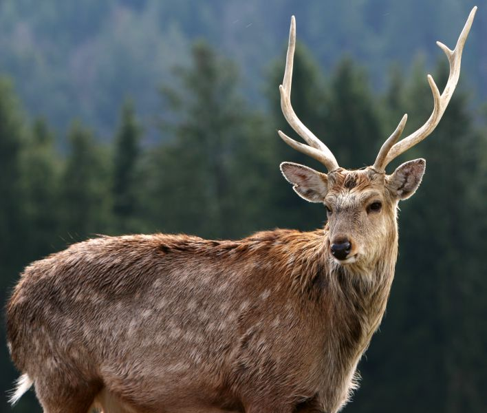

Пятнистый олень - грациозный, шустрый и очень красивый зверек, который обитает в нашей стране на на юге Дальнего Востока и некоторых районах средней полосы и Кавказа. Относится к роду настоящих оленей. В высоту он редко вырастает более 120 см., длина его тела - 150-185 см. Самки несколько меньше самцов. Шерсть у пятнистых короткая и жесткая на ощупь |
 |